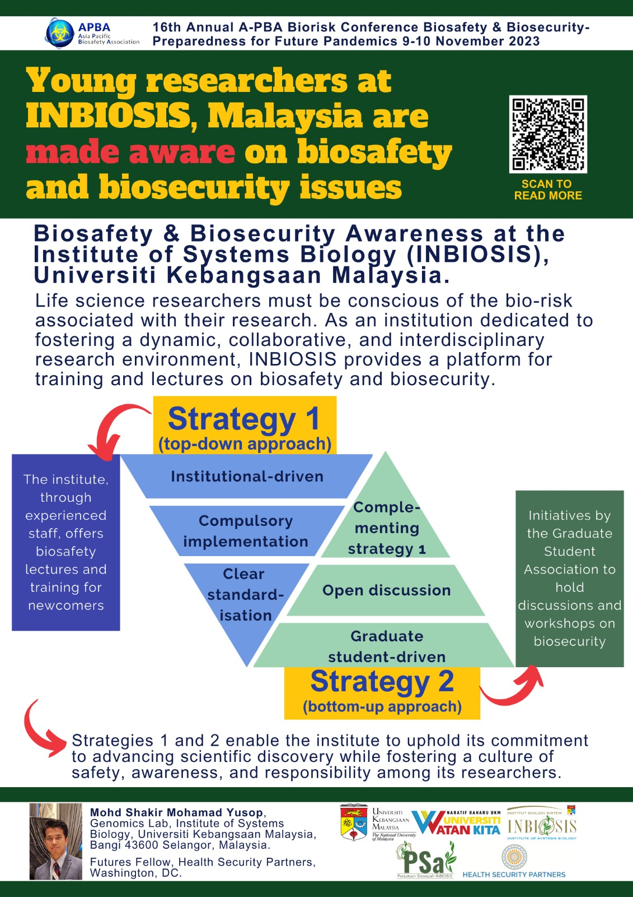
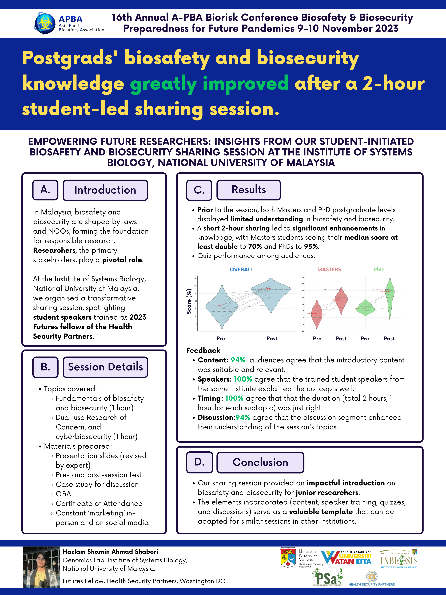

Kesedaran Berkaitan Biokeselamatan & Biosekuriti Dalam Kalangan Penyelidik Muda

Oleh: Shakir Yusop & Hazlam Shamin Ahmad Shaberi
Ringkasan: Artikel ini membincangkan kepentingan biokeselamatan dan biosekuriti dalam penyelidikan saintifik di Malaysia, dengan fokus kepada peranan Jabatan Biokeselamatan (JBK) dan langkah-langkah yang diambil untuk melindungi manusia, haiwan, dan alam sekitar daripada risiko patogen dan toksin biologi. Artikel ini juga menekankan perlunya meningkatkan kesedaran dalam kalangan penyelidik muda mengenai isu ini.
Baca lebih lanjut
INBIOSIS Mendokong Usaha Mempertingkat Kesedaran Biokeselamatan dan Biosekuriti

Oleh: Mohd Shakir Mohamad Yusop
Ringkasan: Artikel ini membincangkan kesedaran mengenai isu-isu biokeselamatan dan biosekuriti di Institut Biologi Sistem (INBIOSIS), Universiti Kebangsaan Malaysia. Artikel ini memperincikan strategi yang diterapkan oleh institusi dan pelajar pascasiswazah untuk memastikan persekitaran penyelidikan yang selamat dan bertanggungjawab. Poster yang berkaitan dan pautan PDF penuh turut disertakan.
Baca lebih lanjut
Peningkatan Pengetahuan Biosekuriti & Biokeselamatan Dalam Kalangan Pascasiswazah di INBIOSIS

Oleh: Hazlam Shamin Ahmad Shaberi
Ringkasan: Artikel ini mengulas mengenai sesi perkongsian yang dikendalikan oleh pelajar di INBIOSIS, Universiti Kebangsaan Malaysia, yang berjaya meningkatkan pengetahuan berkaitan biokeselamatan dan biosekuriti dalam kalangan pelajar pascasiswazah. Poster ini memberikan gambaran penuh tentang sesi ini dan pautan untuk memuat turun poster turut disediakan.
Baca lebih lanjut